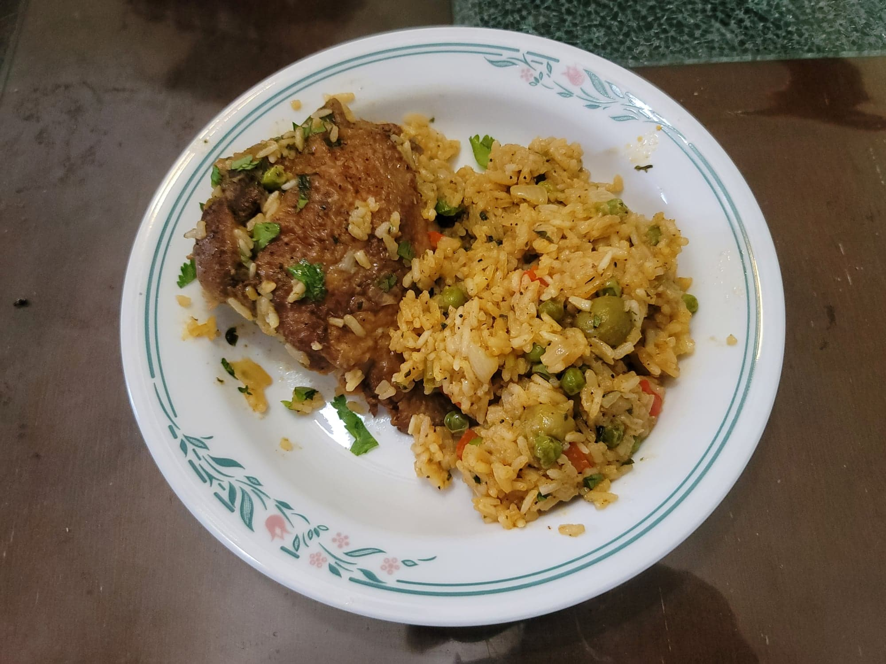

Puerto Rican Arroz con Pollo

Ingredients:
Chicken Marinade:
- 2 1/2 lb Chicken thighs or legs (about 5 pieces), bone-in, skin-on
- 2 tsp Garlic powder
- 2 tsp Onion powder
- 2 tsp Paprika
- 1/2 - 1 tsp Cayenne pepper
- 1/2 tbsp Salt
- 1 tbsp Black pepper
- Optional: Chili lime salt
Arroz con Pollo:
- 2 tbsp Achiote oil
- 2 tbsp Recaito
- 1 Yellow onion, diced
- 4 cloves Garlic, minced
- 1 Bell pepper, diced
- 1/2 bunch Cilantro, chopped
- Salt, to taste
- Black pepper, to taste
- 1 cup Pimento olives, halved
- 1/4 cup Tomato sauce (about 4 oz)
- 2 cups Frozen peas
- 2 1/2 cups Uncooked rice
- 4 cups Chicken broth
- 1 cup Water
- 1 Lime, juiced, or to taste
- More Cilantro, chopped, to garnish
Instructions:
- Combine the marinade spices well in a small bowl. Then massage the spices into the chicken. Let marinate for at least 1 hour or overnight.
- Heat the achiote oil in a large pot over medium heat. Add the chicken and sear for 5 minutes on each side.
- Then add in the recaito, onion, and garlic and sauté until the onions become translucent, about 7-10 minutes. Then add in the bell pepper, cilantro, and salt and pepper to taste. Sauté until the bell peppers soften, about 5 minutes.
- Add in tomato sauce, olives, and peas and sauté for 5 minutes. Stir in the rice and mix well until all of the rice is coated in sauce and seasoning.
- Add broth and water and bring to a boil. Stir and reduce to a simmer. Cook, covered, for 20-30 minutes on low, or until the rice is fully cooked. Taste and add salt or pepper to taste if needed.
- Optionally for the crispy on the bottom, remove the cover and add 1 tbsp of oil (either achiote oil or olive oil). Raise the heat to medium and cook for 5-10 minutes, watching carefully to not burn the rice.
- Remove from the heat. Sprinkle with lime juice and cilantro to taste. Serve immediately.